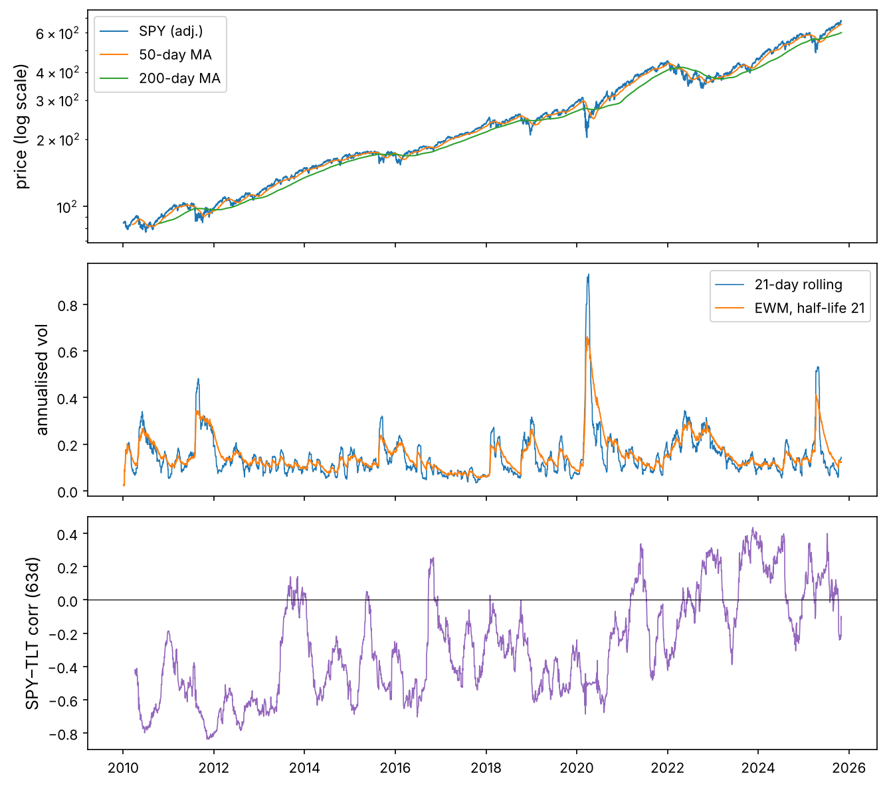

Toolkit · Chapter 2
pandas from Zero
Tables with names and dates: loading real market data, selecting and cleaning it, reshaping it, grouping it, joining it, and the time-series tools (resampling, rolling windows, shifting) that every backtest is built from.
NumPy gave us fast arrays of numbers. Real data is not just numbers: it has labels. A price belongs to a ticker and a date; a return series has gaps on holidays; two data sources disagree on which days exist. pandas adds those labels to NumPy arrays and, crucially, lines data up by label automatically. That single feature removes a whole family of bugs, and it is why pandas is the standard tool for financial data.
In this chapter we use real data: daily prices of ten ETFs and stocks from 2010 to October 2025 (from Yahoo Finance) and three US series from FRED (the 3-month Treasury bill rate, the 10-year Treasury yield and the VIX volatility index). Both files are in the chapter's datasets/ folder.
Like you’re five
A NumPy array is a grid of numbers. A pandas table is the same grid with a name on every row and every column, like a spreadsheet. When you add two pandas columns, pandas matches rows by their names (for us, the dates) before adding, the way you would match two lists of birthdays by person, not by line number.
Setup
import sys
assert sys.version_info >= (3, 9)
import numpy as np
import pandas as pd
print("pandas", pd.__version__, "| NumPy", np.__version__)
import matplotlib as mpl
import matplotlib.pyplot as plt
mpl.rc("axes", labelsize=12, titlesize=13)
mpl.rc("figure", dpi=110)
pd.set_option("display.width", 110)
pd.set_option("display.max_columns", 12)
pd.set_option("display.precision", 4)
from pathlib import Path
IMAGES = Path("images"); IMAGES.mkdir(exist_ok=True)
DATA = Path("datasets")
def save_fig(name):
plt.tight_layout()
plt.savefig(IMAGES / f"{name}.png", dpi=150, bbox_inches="tight")
R = {}
pandas 3.0.5 | NumPy 2.5.3
Note
This chapter is written for pandas 2.2 or newer, including pandas 3. pandas 3 turned on copy-on-write (explained below) and a dedicated string type; the code here works the same on both.
Series: an array with an index
A Series is a 1-D NumPy array plus an index: a label for each value.
s = pd.Series([101.2, 102.5, 101.9], index=["2025-10-01", "2025-10-02", "2025-10-03"], name="SPY")
print(s)
print("values:", s.to_numpy(), "| index:", list(s.index))
print(s["2025-10-02"], s.iloc[0]) # by label, by position
2025-10-01 101.2 2025-10-02 102.5 2025-10-03 101.9 Name: SPY, dtype: float64 values: [101.2 102.5 101.9] | index: ['2025-10-01', '2025-10-02', '2025-10-03'] 102.5 101.2
Arithmetic between two Series aligns on the index first. Labels present in only one of them give NaN, which tells you something did not match instead of silently pairing the wrong rows.
a = pd.Series([1.0, 2.0, 3.0], index=["Mon", "Tue", "Wed"])
b = pd.Series([10.0, 20.0, 30.0], index=["Tue", "Wed", "Thu"])
print(a + b)
print("NumPy would pair by position:", a.to_numpy() + b.to_numpy())
Mon NaN Thu NaN Tue 12.0 Wed 23.0 dtype: float64 NumPy would pair by position: [11. 22. 33.]
The real idea
Alignment is the reason pandas exists. Two price series from different exchanges have different holidays; a stock that listed in 2012 has no data for 2010. pandas matches them by date and marks the gaps. With raw arrays you would have to do this by hand, and an off-by-one-day error in finance means using tomorrow's price today.
DataFrame: a table of aligned Series
A DataFrame is a dictionary of Series sharing one index. Each column has its own dtype.
df = pd.DataFrame({
"ticker": ["AAPL", "MSFT", "KO"],
"price": [270.4, 517.8, 69.1],
"shares": [10, 4, 25],
})
df["value"] = df["price"] * df["shares"] # a new column, vectorised
print(df)
print(df.dtypes)
print("total value:", df["value"].sum())
ticker price shares value 0 AAPL 270.4 10 2704.0 1 MSFT 517.8 4 2071.2 2 KO 69.1 25 1727.5 ticker str price float64 shares int64 value float64 dtype: object total value: 6502.7
Loading real data
pd.read_csv is the workhorse. Tell it which columns are dates with parse_dates; otherwise dates are just text.
prices = pd.read_csv(DATA / "prices_long.csv", parse_dates=["date"])
print(prices.shape)
prices.head()
(39830, 8)
| date | ticker | open | high | low | close | adj_close | volume | |
|---|---|---|---|---|---|---|---|---|
| 0 | 2010-01-04 | AAPL | 7.6225 | 7.6607 | 7.5850 | 7.6432 | 6.4010 | 493729600 |
| 1 | 2010-01-05 | AAPL | 7.6643 | 7.6996 | 7.6161 | 7.6564 | 6.4120 | 601904800 |
| 2 | 2010-01-06 | AAPL | 7.6564 | 7.6868 | 7.5268 | 7.5346 | 6.3100 | 552160000 |
| 3 | 2010-01-07 | AAPL | 7.5625 | 7.5714 | 7.4661 | 7.5207 | 6.2984 | 477131200 |
| 4 | 2010-01-08 | AAPL | 7.5107 | 7.5714 | 7.4664 | 7.5707 | 6.3402 | 447610800 |
prices.info()
<class 'pandas.DataFrame'> RangeIndex: 39830 entries, 0 to 39829 Data columns (total 8 columns): # Column Non-Null Count Dtype --- ------ -------------- ----- 0 date 39830 non-null datetime64[us] 1 ticker 39830 non-null str 2 open 39830 non-null float64 3 high 39830 non-null float64 4 low 39830 non-null float64 5 close 39830 non-null float64 6 adj_close 39830 non-null float64 7 volume 39830 non-null int64 dtypes: datetime64[us](1), float64(5), int64(1), str(1) memory usage: 2.5 MB
The file is in long format: one row per (date, ticker) pair. That is how databases store prices. close is the trading price (adjusted for stock splits by Yahoo), adj_close is additionally adjusted for dividends, and volume is the number of shares traded.
print(prices["ticker"].unique())
print(prices["ticker"].value_counts().head(3))
prices.describe().T
<ArrowStringArray> ['AAPL', 'EEM', 'GLD', 'JPM', 'KO', 'MSFT', 'QQQ', 'SPY', 'TLT', 'XOM'] Length: 10, dtype: str ticker AAPL 3983 EEM 3983 GLD 3983 Name: count, dtype: int64
| count | mean | min | 25% | 50% | 75% | max | std | |
|---|---|---|---|---|---|---|---|---|
| date | 39830 | 2017-11-30 18:25:34.722571 | 2010-01-04 00:00:00 | 2013-12-16 00:00:00 | 2017-11-29 00:00:00 | 2021-11-12 00:00:00 | 2025-10-31 00:00:00 | NaN |
| open | 39830.0 | 127.4089 | 6.8704 | 46.07 | 97.895 | 155.8 | 688.72 | 112.6369 |
| high | 39830.0 | 128.2822 | 7.0 | 46.38 | 98.735 | 156.9175 | 689.7 | 113.3532 |
| low | 39830.0 | 126.4993 | 6.7946 | 45.79 | 97.22 | 154.685 | 684.83 | 111.8482 |
| close | 39830.0 | 127.436 | 6.8589 | 46.09 | 98.0 | 155.985 | 687.39 | 112.657 |
| adj_close | 39830.0 | 114.7475 | 5.7441 | 38.098 | 80.4745 | 143.553 | 680.0531 | 112.118 |
| volume | 39830.0 | 54081801.17 | 987200.0 | 12419650.0 | 24732150.0 | 56734550.0 | 1880998000.0 | 96161308.9196 |
Selecting data: [], .loc, .iloc
There are three ways to select, and mixing them up is the most common pandas confusion:
| Syntax | Selects by | Example |
|---|---|---|
df["col"], df[["a", "b"]] |
column name(s) | prices["close"] |
df.loc[rows, cols] |
labels (index values, column names, boolean masks) | df.loc["2020-03", "SPY"] |
df.iloc[rows, cols] |
positions (0, 1, 2, …) | df.iloc[-5:, 0] |
spy = prices[prices["ticker"] == "SPY"] # boolean mask on rows
print(spy[["date", "close", "volume"]].tail(3))
big_days = prices.loc[prices["volume"] > 5e8, ["date", "ticker", "volume"]]
print(len(big_days), "rows with more than 500 million shares traded;", big_days["ticker"].unique())
print(prices.query("ticker == 'KO' and close > 70").shape) # the same idea as a string
date close volume 31861 2025-10-29 687.39 85657100 31862 2025-10-30 679.83 76335800 31863 2025-10-31 682.06 87164100 433 rows with more than 500 million shares traded; <ArrowStringArray> ['AAPL', 'SPY'] Length: 2, dtype: str
(122, 8)
Setting values the right way (copy-on-write)
Writing df[df.a > 0]["b"] = 1 is chained assignment: the first [] makes a new object and the second writes into it, so the original never changes. Modern pandas (copy-on-write, the default in pandas 3) guarantees that any object you get from indexing behaves as a copy. To modify a DataFrame, always use one .loc call.
d = pd.DataFrame({"r": [0.01, -0.02, 0.03], "signal": 0})
d.loc[d["r"] > 0, "signal"] = 1 # one .loc: rows and column together
print(d)
r signal 0 0.01 1 1 -0.02 0 2 0.03 1
Trap
If you write sub = df[df.ticker == "SPY"] and then modify sub, the original df is not changed (with copy-on-write). That is usually what you want. If you meant to change df, use df.loc[mask, col] = ….
From long to wide: one column per ticker
Most analysis wants a wide table: dates down the rows, one column per asset. pivot reshapes long into wide; melt goes back.
close = prices.pivot(index="date", columns="ticker", values="adj_close")
print(close.shape)
close.tail(3)
(3983, 10)
| ticker | AAPL | EEM | GLD | JPM | KO | MSFT | QQQ | SPY | TLT | XOM |
|---|---|---|---|---|---|---|---|---|---|---|
| date | ||||||||||
| 2025-10-29 | 268.7074 | 54.9342 | 363.00 | 299.7372 | 66.5800 | 537.1306 | 632.7968 | 680.0531 | 87.4026 | 113.1700 |
| 2025-10-30 | 270.4011 | 54.3654 | 370.13 | 303.5929 | 67.1937 | 521.4695 | 623.1223 | 672.5738 | 86.8941 | 111.4596 |
| 2025-10-31 | 269.3749 | 54.2379 | 368.12 | 305.2411 | 67.1158 | 513.5844 | 626.1281 | 674.7800 | 86.6350 | 111.1389 |
back = close.reset_index().melt(id_vars="date", var_name="ticker", value_name="adj_close")
print(back.head(3)); print(len(back), "rows (NaN cells included)")
date ticker adj_close 0 2010-01-04 AAPL 6.401 1 2010-01-05 AAPL 6.412 2 2010-01-06 AAPL 6.310 39830 rows (NaN cells included)
The Reshape tab of the playground below animates pivot and melt on a tiny table.
The DatetimeIndex: dates as the index
With dates as the index, you can select periods with strings, and pandas understands calendars.
print(type(close.index), close.index.min().date(), "→", close.index.max().date())
print(close.loc["2020-03-16", ["SPY", "TLT", "GLD"]]) # one day
covid = close.loc["2020-02-19":"2020-03-23", "SPY"] # the COVID crash
print(f"first {covid.iloc[0]:.2f}, last {covid.iloc[-1]:.2f}, low {covid.min():.2f} on {covid.idxmin().date()}")
print("trading days in 2024:", close.loc["2024"].shape[0])
<class 'pandas.DatetimeIndex'> 2010-01-04 → 2025-10-31 ticker SPY 218.0864 TLT 134.4127 GLD 141.6400 Name: 2020-03-16 00:00:00, dtype: float64 first 307.64, last 203.91, low 203.91 on 2020-03-23 trading days in 2024: 252
Returns: pct_change, shift and log returns
rets = close.pct_change(fill_method=None) # P_t / P_{t-1} - 1, per column
logr = np.log(close).diff() # ln P_t - ln P_{t-1}
print(rets[["SPY", "AAPL"]].tail(3))
same = (close / close.shift(1) - 1) # what pct_change does
print("identical:", np.allclose(same.dropna(), rets.dropna()))
ticker SPY AAPL date 2025-10-29 0.0005 0.0026 2025-10-30 -0.0110 0.0063 2025-10-31 0.0033 -0.0038 identical: True
shift(1) moves every value one row down: on each date you see yesterday's value. That is exactly how you avoid look-ahead bias: a signal computed with data up to today can only be traded from tomorrow.
Trap
shift(-1) moves values up: tomorrow's value appears today. It is the right tool to build a target (what you want to predict), and the most dangerous line in quant finance if it leaks into your features. Every backtest bug that looks too good to be true starts here. The Shift tab of the playground shows both directions.
Price return versus total return
close ignores dividends; adj_close reinvests them. For high-dividend assets the difference is huge.
def total_growth(px):
px = px.dropna()
return px.iloc[-1] / px.iloc[0]
wide_close = prices.pivot(index="date", columns="ticker", values="close")
cmp = pd.DataFrame({
"price return": wide_close.apply(total_growth) - 1,
"total return": close.apply(total_growth) - 1,
}).sort_values("total return")
cmp["gap"] = cmp["total return"] - cmp["price return"]
print(cmp.round(2))
R["tlt_price"] = f"{cmp.loc['TLT', 'price return']:+.0%}"
R["tlt_total"] = f"{cmp.loc['TLT', 'total return']:+.0%}"
price return total return gap ticker TLT 0.01 0.57 0.57 EEM 0.29 0.80 0.50 XOM 0.65 1.99 1.34 GLD 2.35 2.35 0.00 KO 1.42 2.92 1.51 SPY 5.02 7.00 1.98 JPM 6.26 9.90 3.64 QQQ 12.55 14.57 2.02 MSFT 15.73 21.35 5.61 AAPL 34.37 41.08 6.71
Long Treasury bonds (TLT) show +1% on price alone but +57% once their interest payments are counted. Any backtest that uses unadjusted closes for a dividend-paying asset is wrong.
Missing data
NaN marks a missing value. In price tables it comes from holidays that differ between sources, assets that did not exist yet, and data errors.
merged = close.join(pd.read_csv(DATA / "fred_rates.csv", index_col="date", parse_dates=True))
print(merged.isna().sum().tail(4))
print(merged.loc["2024-11-07":"2024-11-13", ["SPY", "DGS10", "VIXCLS"]])
XOM 0
DGS3MO 29
DGS10 29
VIXCLS 0
dtype: int64
SPY DGS10 VIXCLS
date
2024-11-07 582.1750 4.31 15.20
2024-11-08 584.6968 4.30 14.94
2024-11-11 585.2539 NaN 14.97
2024-11-12 583.4359 4.43 14.71
2024-11-13 583.7194 4.44 14.02
On 11 November 2024 (Veterans Day) the stock market was open but the bond market was closed, so the Treasury yield is missing while SPY has a price. The fixes:
m = merged[["SPY", "DGS10", "VIXCLS"]]
print("drop rows with any NaN:", m.dropna().shape)
print("forward fill:", m.ffill().isna().sum().to_dict())
print(m.loc["2024-11-11"].to_dict(), "→ ffill →", m.ffill().loc["2024-11-11"].to_dict())
drop rows with any NaN: (3954, 3)
forward fill: {'SPY': 0, 'DGS10': 0, 'VIXCLS': 0}{'SPY': 585.2539, 'DGS10': nan, 'VIXCLS': 14.97} → ffill → {'SPY': 585.2539, 'DGS10': 4.3, 'VIXCLS': 14.97}
Trap
ffill() (carry the last known value forward) is safe: on each day it uses only the past. bfill() (fill from the next value) and interpolate() use the future, so they leak information into a backtest. Use them only for plotting, never for signals.
Resampling: changing the frequency
resample groups the time index into bins (weeks, months, years) and aggregates each bin. To get monthly returns from daily prices, take the last price of each month, then compute returns.
monthly_px = close.resample("ME").last() # "ME" = month end
monthly_ret = monthly_px.pct_change(fill_method=None)
print(monthly_ret[["SPY", "TLT", "GLD"]].tail(4))
yearly = close.resample("YE").last().pct_change(fill_method=None)
yearly.index = yearly.index.year
print(yearly.loc[2018:2025, ["SPY", "QQQ", "TLT", "GLD"]].round(3))
ticker SPY TLT GLD date 2025-07-31 0.0230 -0.0114 -0.0061 2025-08-31 0.0205 0.0001 0.0499 2025-09-30 0.0356 0.0359 0.1176 2025-10-31 0.0238 0.0138 0.0356
ticker SPY QQQ TLT GLD date 2018 -0.046 -0.001 -0.016 -0.019 2019 0.312 0.390 0.141 0.179 2020 0.183 0.484 0.182 0.248 2021 0.287 0.274 -0.046 -0.041 2022 -0.182 -0.326 -0.312 -0.008 2023 0.262 0.549 0.028 0.127 2024 0.249 0.256 -0.081 0.267 2025 0.174 0.235 0.068 0.520
Prices aggregate with last (or ohlc for candles), volumes with sum, returns by compounding:
spy_daily = prices[prices.ticker == "SPY"].set_index("date")
weekly = spy_daily.resample("W-FRI").agg({"open": "first", "high": "max", "low": "min", "close": "last", "volume": "sum"})
print(weekly.tail(3))
r = rets["SPY"]
compounded = (1 + r).resample("ME").prod() - 1
print("compounding daily returns = monthly return:", np.allclose(compounded.iloc[1:], monthly_ret["SPY"].iloc[1:]))
open high low close volume date 2025-10-17 660.65 670.23 653.17 664.39 457106900 2025-10-24 667.32 678.47 663.30 677.25 337267400 2025-10-31 682.73 689.70 679.24 682.06 374234900 compounding daily returns = monthly return: True
Rolling, expanding and exponential windows
Rolling windows are the bread and butter of signals and risk: moving averages, rolling volatility, rolling correlations and betas.
spy = close["SPY"]
ma50, ma200 = spy.rolling(50).mean(), spy.rolling(200).mean()
vol21 = rets["SPY"].rolling(21).std() * np.sqrt(252) # 1-month realised vol, annualised
ewm_vol = rets["SPY"].ewm(halflife=21).std() * np.sqrt(252)
corr = rets["SPY"].rolling(63).corr(rets["TLT"]) # 3-month stock-bond correlation
running_max = spy.expanding().max()
drawdown = spy / running_max - 1
fig, ax = plt.subplots(3, 1, figsize=(9, 8), sharex=True)
ax[0].plot(spy, lw=1, label="SPY (adj.)"); ax[0].plot(ma50, lw=1, label="50-day MA"); ax[0].plot(ma200, lw=1, label="200-day MA")
ax[0].set_yscale("log"); ax[0].legend(); ax[0].set_ylabel("price (log scale)")
ax[1].plot(vol21, lw=0.8, label="21-day rolling"); ax[1].plot(ewm_vol, lw=1, label="EWM, half-life 21")
ax[1].set_ylabel("annualised vol"); ax[1].legend()
ax[2].plot(corr, lw=0.8, color="tab:purple"); ax[2].axhline(0, color="k", lw=0.6)
ax[2].set_ylabel("SPY–TLT corr (63d)")
save_fig("rolling_windows")
plt.show()
R["vol_peak"] = f"{vol21.max():.0%}"
R["vol_peak_date"] = vol21.idxmax().strftime("%B %Y")
R["mdd"] = f"{drawdown.min():.0%}"
R["corr_2022"] = f"{corr.loc['2022'].mean():+.2f}"
R["corr_2010s"] = f"{corr.loc['2011':'2019'].mean():+.2f}"

Three facts jump out, and each will come back in the Financial ML course:
- Volatility clusters: it peaked at 93% in April 2020 and stays high for weeks after a shock (Chapter 3 forecasts it).
- The worst SPY drawdown in the sample is -34%.
- The stock–bond correlation averaged -0.41 in 2011–2019 (bonds hedged stocks) but -0.02 in 2022, when stocks and bonds fell together. A portfolio built on the old correlation got hurt (Chapter 4).
Quant view
rolling(21) gives NaN for the first 20 rows: there is not a full window yet. min_periods lets you start earlier with fewer points. ewm(halflife=h) weights recent observations more, with weights halving every h days. It reacts faster to a new regime, which is why the RiskMetrics volatility model uses it. Both only use the past, so they are safe for signals.
groupby: split, apply, combine
groupby splits a table into groups, applies a function to each, and combines the results. The Groupby tab of the playground animates the three steps.
prices["ret"] = prices.groupby("ticker")["adj_close"].pct_change(fill_method=None) # per ticker: never across tickers!
stats = prices.groupby("ticker")["ret"].agg(
mean_daily="mean", vol_daily="std", best="max", worst="min", days="count")
stats["ann_return"] = (1 + stats["mean_daily"]) ** 252 - 1
stats["ann_vol"] = stats["vol_daily"] * np.sqrt(252)
stats["sharpe_0rf"] = stats["mean_daily"] / stats["vol_daily"] * np.sqrt(252)
print(stats.sort_values("sharpe_0rf", ascending=False).round(3))
mean_daily vol_daily best worst days ann_return ann_vol sharpe_0rf ticker AAPL 0.001 0.018 0.153 -0.129 3982 0.319 0.283 0.978 QQQ 0.001 0.013 0.120 -0.120 3982 0.215 0.207 0.944 MSFT 0.001 0.016 0.142 -0.147 3982 0.258 0.255 0.897 SPY 0.001 0.011 0.105 -0.109 3982 0.158 0.173 0.849 JPM 0.001 0.017 0.180 -0.150 3982 0.208 0.276 0.685 KO 0.000 0.011 0.065 -0.097 3982 0.106 0.171 0.592 GLD 0.000 0.010 0.049 -0.088 3982 0.093 0.158 0.564 XOM 0.000 0.016 0.127 -0.122 3982 0.106 0.249 0.403 EEM 0.000 0.013 0.081 -0.125 3982 0.062 0.214 0.281 TLT 0.000 0.010 0.075 -0.067 3982 0.041 0.152 0.265
Trap
prices["adj_close"].pct_change() on the long table would compute the “return” from the last AAPL price to the first EEM price where the tickers change. Group first. The same applies to shift, rolling and diff on long data.
transform returns a result with the same shape as the input, aligned to the original rows. It is how you put a per-group statistic back into each row:
prices["ret_z"] = prices.groupby("ticker")["ret"].transform(lambda x: (x - x.mean()) / x.std())
prices["vol_63"] = prices.groupby("ticker")["ret"].transform(lambda x: x.rolling(63).std())
print(prices[["date", "ticker", "ret", "ret_z", "vol_63"]].dropna().tail(3))
date ticker ret ret_z vol_63 39827 2025-10-29 XOM 0.0123 0.7608 0.0114 39828 2025-10-30 XOM -0.0151 -0.9880 0.0113 39829 2025-10-31 XOM -0.0029 -0.2086 0.0110
Cross-sectional ranks: comparing assets on each date
Grouping by date instead of ticker compares assets with each other on each day. This is the heart of cross-sectional strategies (Chapter 6): each month, rank assets on their past 12-month return and buy the leaders.
mom12 = monthly_px.pct_change(12, fill_method=None) # 12-month return, per column
rank = mom12.rank(axis=1, ascending=False) # 1 = strongest on that date
print(rank.tail(3))
top3_next_month = (rank.shift(1) <= 3) # decided last month, held this month
strategy = (monthly_ret.where(top3_next_month)).mean(axis=1)
equal = monthly_ret.mean(axis=1)
both = pd.DataFrame({"top-3 momentum": strategy, "equal weight": equal}).dropna()
print(((1 + both).prod() ** (12 / len(both)) - 1).round(3).to_dict())
ticker AAPL EEM GLD JPM KO MSFT QQQ SPY TLT XOM
date
2025-08-31 7.0 5.0 1.0 2.0 9.0 3.0 4.0 6.0 10.0 8.0
2025-09-30 7.0 5.0 2.0 1.0 10.0 4.0 3.0 6.0 9.0 8.0
2025-10-31 7.0 5.0 1.0 2.0 8.0 4.0 3.0 6.0 9.0 10.0
{'top-3 momentum': 0.146, 'equal weight': 0.139}
The shift(1) makes sure we rank using information known at the end of the previous month. Whether the momentum version is really better, and whether the difference is luck, is exactly what the Financial ML course will teach you to test.
Combining tables: concat, merge, join, merge_asof
fred = pd.read_csv(DATA / "fred_rates.csv", parse_dates=["date"])
spy_tbl = prices.loc[prices.ticker == "SPY", ["date", "adj_close"]]
m1 = spy_tbl.merge(fred, on="date", how="left") # keep every SPY day
print(m1.tail(3))
print("how='left' keeps", len(m1), "rows; how='inner' keeps", len(spy_tbl.merge(fred, on="date")))
date adj_close DGS3MO DGS10 VIXCLS 3980 2025-10-29 680.0531 3.93 4.08 16.92 3981 2025-10-30 672.5738 3.92 4.11 16.91 3982 2025-10-31 674.7800 3.89 4.11 17.44 how='left' keeps 3983 rows; how='inner' keeps 3983
The join type decides what happens to rows without a partner: inner keeps only matches, left keeps all rows of the left table, outer keeps everything. Always check row counts after a merge; a key that is accidentally duplicated multiplies rows silently.
pd.concat stacks tables vertically (more rows) or side by side (axis=1), aligning on the index:
part1, part2 = close.loc["2024-12"], close.loc["2025-01"]
print(pd.concat([part1, part2]).shape, pd.concat([close["SPY"], close["TLT"]], axis=1).shape)
(41, 10) (3983, 2)
merge_asof: the point-in-time join
Economic data is released with a delay. If inflation for March is published on 10 April, a backtest may use it only from 10 April. merge_asof joins each row to the most recent row of the other table at or before its date, which is exactly “what was known at the time”.
releases = pd.DataFrame({
"date": pd.to_datetime(["2025-03-12", "2025-04-10", "2025-05-13"]),
"cpi_yoy": [2.8, 2.4, 2.3], # announced on these dates
})
days = pd.DataFrame({"date": pd.bdate_range("2025-04-08", "2025-04-14")})
print(pd.merge_asof(days, releases, on="date", direction="backward"))
date cpi_yoy 0 2025-04-08 2.8 1 2025-04-09 2.8 2 2025-04-10 2.4 3 2025-04-11 2.4 4 2025-04-14 2.4
Performance and good style
Vectorise instead of apply and loops
import time
x = prices["ret"].fillna(0)
t0 = time.perf_counter(); slow = x.apply(lambda v: max(v, 0)); t1 = time.perf_counter()
fast = x.clip(lower=0); t2 = time.perf_counter()
print(f"apply {1000*(t1-t0):.1f} ms vs clip {1000*(t2-t1):.2f} ms, equal: {slow.equals(fast)}")
R["apply_ratio"] = f"{(t1 - t0) / (t2 - t1):.0f}"
apply 9.4 ms vs clip 0.88 ms, equal: True
The vectorised method was about 11 times faster. apply with a Python function runs a Python call per row; methods such as clip, where, rolling, rank and arithmetic run in compiled code.
Method chaining
Building a result as a chain of small steps, each returning a new DataFrame, reads top to bottom like a recipe and avoids half-modified intermediate variables. assign adds columns, pipe applies your own function.
def annualise(df, periods=252):
return df.assign(ann_vol=df["vol"] * np.sqrt(periods))
summary = (
prices
.loc[lambda d: d["date"] >= "2020-01-01"]
.groupby("ticker", as_index=False)
.agg(vol=("ret", "std"), last_price=("close", "last"))
.pipe(annualise)
.sort_values("ann_vol")
)
summary
| ticker | vol | last_price | ann_vol | |
|---|---|---|---|---|
| 2 | GLD | 0.0103 | 368.12 | 0.1627 |
| 8 | TLT | 0.0109 | 90.29 | 0.1730 |
| 4 | KO | 0.0129 | 68.90 | 0.2043 |
| 7 | SPY | 0.0132 | 682.06 | 0.2094 |
| 1 | EEM | 0.0138 | 55.30 | 0.2191 |
| 6 | QQQ | 0.0161 | 629.07 | 0.2550 |
| 5 | MSFT | 0.0188 | 517.81 | 0.2978 |
| 3 | JPM | 0.0199 | 311.12 | 0.3157 |
| 0 | AAPL | 0.0203 | 270.37 | 0.3217 |
| 9 | XOM | 0.0209 | 114.36 | 0.3312 |
Memory: categories and file formats
mem_obj = prices["ticker"].astype(object).memory_usage(deep=True)
mem_cat = prices["ticker"].astype("category").memory_usage(deep=True)
print(f"ticker column: {mem_obj/1e6:.2f} MB as Python strings, {mem_cat/1e6:.3f} MB as category")
prices.to_parquet("prices.parquet") # columnar, typed, compressed
import os
print(f"CSV {os.path.getsize(DATA / 'prices_long.csv')/1e6:.1f} MB vs Parquet {os.path.getsize('prices.parquet')/1e6:.1f} MB")
print(pd.read_parquet("prices.parquet").dtypes.head(3))
os.remove("prices.parquet")
ticker column: 2.08 MB as Python strings, 0.040 MB as category
CSV 2.3 MB vs Parquet 2.5 MB
date datetime64[us] ticker str open float64 dtype: object
Parquet keeps the dtypes (dates stay dates), loads many times faster than CSV and is the standard format for research data. CSV is fine for sharing small files.
A small case study: the crash of March 2020
Everything together: select a window, compute drawdowns per asset, and see which assets protected a portfolio.
window = close.loc["2020-02-19":"2020-03-23"]
crash = (window.iloc[-1] / window.iloc[0] - 1).sort_values()
worst_dd = (window / window.cummax() - 1).min()
corr_before = rets.loc["2019"].corr()["SPY"]
corr_during = rets.loc["2020-02-19":"2020-03-23"].corr()["SPY"]
table = pd.DataFrame({"return": crash, "max drawdown": worst_dd,
"corr with SPY 2019": corr_before, "corr during crash": corr_during}).sort_values("return")
print(table.round(2))
R["tlt_crash"] = f"{crash['TLT']:+.0%}"
R["spy_crash"] = f"{crash['SPY']:+.0%}"
return max drawdown corr with SPY 2019 corr during crash ticker XOM -0.48 -0.48 0.64 0.89 JPM -0.43 -0.43 0.70 0.93 KO -0.37 -0.37 0.33 0.85 SPY -0.34 -0.34 1.00 1.00 EEM -0.31 -0.31 0.76 0.93 AAPL -0.31 -0.31 0.74 0.97 QQQ -0.28 -0.29 0.95 0.98 MSFT -0.27 -0.28 0.81 0.96 GLD -0.04 -0.13 -0.27 -0.01 TLT 0.14 -0.16 -0.46 -0.50
From 19 February to 23 March 2020 SPY moved -34% while long Treasuries moved +14%. Notice how the correlations of the stocks with SPY rose during the crash: diversification across stocks weakens exactly when you need it.
The mistakes that cost quants money
| Mistake | What happens | Fix |
|---|---|---|
Using close instead of adj_close |
Dividends and splits distort returns | Use adjusted prices for returns |
pct_change/shift on long data without groupby |
Returns across different tickers | groupby("ticker") first |
shift(-1) or bfill in features |
Look-ahead bias, fake profits | Features use only shift(k ≥ 0), ffill |
Chained assignment df[m]["c"] = v |
Nothing changes | df.loc[m, "c"] = v |
| Merge with duplicated keys | Rows multiply silently | Check len before and after; validate="one_to_one" |
Forgetting NaN alignment |
Statistics on fewer days than you think | Check .count(), decide dropna/ffill |
| Dates as strings | No resampling, wrong sorting | parse_dates, pd.to_datetime |
apply with a lambda on big data |
10–100× slower | Vectorised methods |
Exercises
Try it
- From
prices, build a wide table of daily volumes and find, for each ticker, the date of its highest volume. - Compute each asset's annual returns for 2015–2024 from
closewithresample, and the number of years each asset beat SPY. - Compute the rolling 1-year beta of AAPL to SPY: $\beta = \text{Cov}(r_A, r_M) / \text{Var}(r_M)$ with
rolling(252). When was it highest? - Create a column
next_retwith each ticker's next-day return (the target), and check, usingcorr, whether today's return predicts tomorrow's for SPY. Be careful about which shift goes where. - For each calendar month name (January, February, …), compute the average SPY monthly return across years. Is there a “best month”? How many years back each average?
- Use
merge_asofto attach to every SPY trading day the latest weekly close of GLD known at that date.
Solutions
# 1
vol_wide = prices.pivot(index="date", columns="ticker", values="volume")
print(vol_wide.idxmax().dt.date)
# 2
ann = close.resample("YE").last().pct_change(fill_method=None).loc["2015":"2024"]
print(ann.gt(ann["SPY"], axis=0).sum().drop("SPY"))
# 3
cov = rets["AAPL"].rolling(252).cov(rets["SPY"])
beta = cov / rets["SPY"].rolling(252).var()
print(f"highest beta {beta.max():.2f} on {beta.idxmax().date()}")
# 4
prices["next_ret"] = prices.groupby("ticker")["ret"].shift(-1) # target only!
spy_rows = prices[prices.ticker == "SPY"]
print("corr(today, tomorrow) for SPY:", round(spy_rows["ret"].corr(spy_rows["next_ret"]), 3))
# 5
sm = monthly_ret["SPY"].dropna()
by_month = sm.groupby(sm.index.month_name()).agg(["mean", "count"])
print(by_month.sort_values("mean", ascending=False).round(4).head(4))
# 6
gld_w = close["GLD"].resample("W-FRI").last().rename("gld_weekly").reset_index()
spy_days = close["SPY"].reset_index()
print(pd.merge_asof(spy_days, gld_w, on="date").tail(3))
ticker
AAPL 2011-01-18
EEM 2010-05-06
GLD 2013-04-15
JPM 2012-05-11
KO 2012-09-21
MSFT 2011-04-29
QQQ 2010-05-07
SPY 2011-08-09
TLT 2025-04-09
XOM 2010-06-25
dtype: object
ticker
AAPL 7
EEM 1
GLD 4
JPM 7
KO 3
MSFT 8
QQQ 7
TLT 1
XOM 3
dtype: int64
highest beta 1.59 on 2021-07-19
corr(today, tomorrow) for SPY: -0.105
mean count
date
November 0.0328 15
July 0.0296 16
October 0.0227 16
January 0.0135 15
date SPY gld_weekly
3980 2025-10-29 680.0531 377.52
3981 2025-10-30 672.5738 377.52
3982 2025-10-31 674.7800 368.12
What's next
You can now load, clean, reshape and analyse a market dataset. Toolkit Chapter 3 turns those tables into clear charts, from a single line plot to a full market report, and finishes the toolkit.